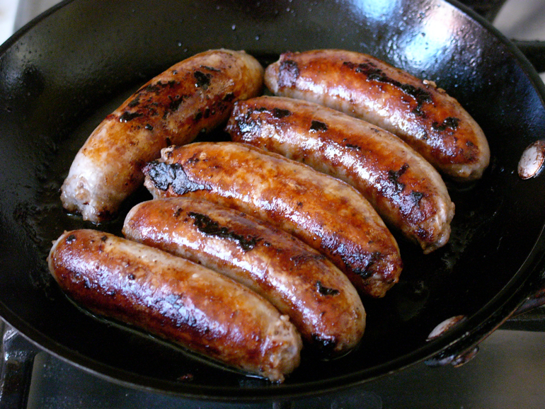

Portion Guide : Portion guide: Beans, pulses, fish, eggs, meat and other proteins
These foods are good sources of protein, vitamins and minerals. Pulses such as beans, peas and lentils are good alternatives to meat because they're lower in fat and higher in fibre.
Some meat is high in saturated fats. To help cut back on saturated fat, try having at least one meat-free day a week, buy reduced fat versions if they’re available or trim off any skin or visible fat from your meat.
How much is one portion of beans or pulses?
One 200g tin, or half a 400g tin, of baked beans in tomato sauce (low sugar and low salt if possible).
Figure 1.1 : Baked Beans in tomato sauce.
Three heaped tablespoons of beans - e.g. kidney beans or chick peas..
Figure 1.2 : Chickpeas.
Three fish fingers.
Figure 1.3 : Fish fingers.
One palm-size piece of oily fish.
Figure 1.4 : Oily fish.
One palm-size piece of white fish.
Figure 1.5 : White fish.
Half a large tin or one whole small tin (160g) of tuna.
Figure 1.6 : Tuna.
One portion is two eggs.
Figure 1.7 : Eggs.
Five slices of cut ham.
Figure 1.8 : Ham.
One palm-size piece of chicken (without skin and with all visible fat removed).
Figure 1.9 : Chicken.
Four level teaspoons of full-fat mince, eight level tablespoons of 5% reduced-fat mince, or 10 level tablespoons of Quorn mince - choosing the reduced-fat options means you can increase your portion size.
Figure 1.10 : Mince.
One and a quarter full fat pork sausages, two reduced-fat pork sausages, or two and a half Quorn sausages. Choosing the reduced-fat options means you can increase your portion size.

Figure 1.11 : Sausages.
Two teaspoons of peanut butter.
Figure 1.12 : Peanut Butter.
One palm-size piece of tofu.
Figure 1.13 : Tofu.
One handful of unsalted nuts.
Figure 1.14 : Unsalted Nuts.